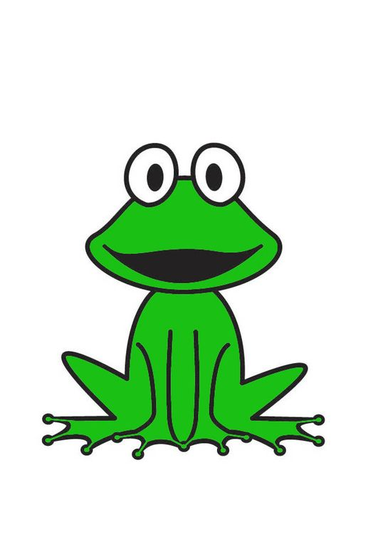

En mij om dit vetgedrukt te maken

Een section gebruik je om belangrijke onderdelen op een pagina in te delenEen section gebruik je om belangrijke onderdelen op een pagina in te delen
Een DIV gebruik je vaak zonder dat er directe betekenis aan hangt,
Je kunt er elementen in zetten en ze dan in 1x als geheel opmaken
stijlen of plaatsen op het scherm.
Lijst onderdeel 1
Lijst onderdeel 2
Lijst onderdeel 3
Lijst onderdeel 1
Lijst onderdeel 2
Lijst onderdeel 3
dit iseen oefening
A line break haiku.
Poems are a great use case.
Oh joy! A line break.